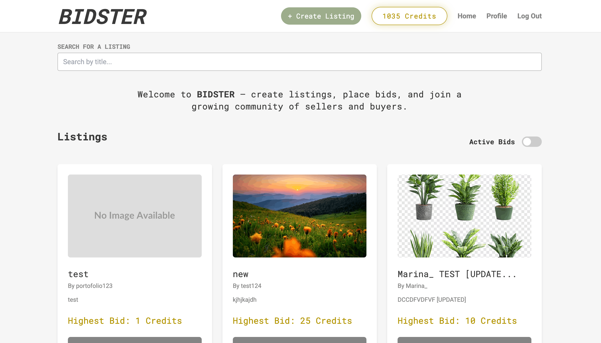

Semester Project 2

Project Overview
Bidsterr was completed as part of Semester Project 2 at Noroff. The project is an auction-based web application where users can browse listings, create auctions, place bids and manage their profile.
The project focused on building a functional front-end application connected to the Noroff Auction API. It included authentication, dynamic API data, user actions and a responsive user interface.
Assignment Requirements
The assignment required students to create an auction website using the Noroff API and apply the front-end development skills learned throughout the course.
As part of the assignment I:
- Created a user interface for browsing auction listings
- Used the Noroff Auction API to fetch and display listings
- Added user registration and login functionality
- Allowed logged-in users to create new listings
- Allowed users to place bids on listings
- Created profile pages where users can view their listings and bids
- Added edit and delete functionality for user-created listings
- Displayed listing details, bid history and auction end dates
What I Learned
Through this project I developed a better understanding of working with authenticated API requests and user-specific data. I learned how to manage tokens, display dynamic content and create user actions such as bidding, creating listings and editing existing listings.
I also gained more experience with structuring larger JavaScript projects, organizing API files, using local storage and creating a more complete user flow from login to profile management.
Portfolio Improvements
For Portfolio 2, I reviewed the project and made an additional improvement to prepare it for professional presentation.
- Added a fallback image for listings without uploaded media
- Improved the listings overview so empty image containers do not appear
- Improved the visual consistency of listing cards on the home page
- Reviewed the user experience on the listings page
- Updated the README documentation
This improvement made the listings page look more complete and helped prevent a broken or unfinished layout when a listing does not include an image.